18. Mixing
18.1 The Live Mixer
Live includes a mixer section that is accessible from both Session and Arrangement View:
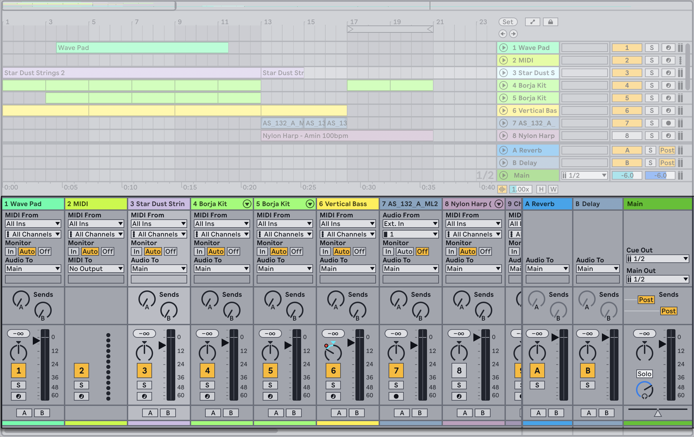
It is also possible to access mixer features in an individual track in Arrangement View using the Track Controls section.
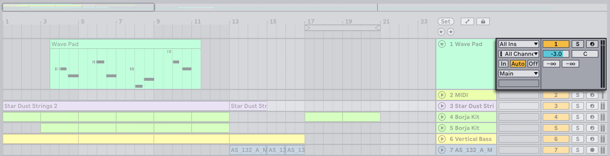
In Session View, the mixer section appears below the track’s scenes.
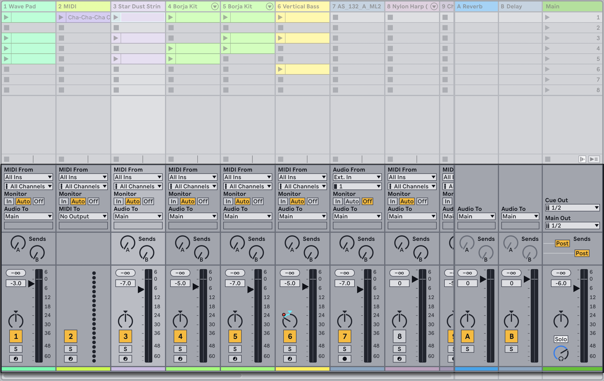
You can use the mixer view control at the bottom right corner of Live’s window to show or hide the mixer.
The drop-down menu toggle next to the mixer view control can be used to show or hide mixer components.

Let’s look at the mixer controls:
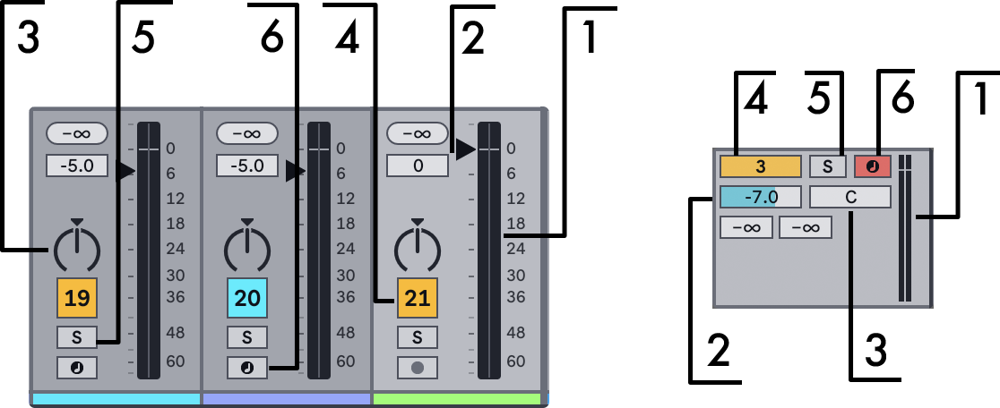
- The Meter shows both peak and RMS output levels for the track. While monitoring, however, it shows peak and RMS input levels. Peak meters show sudden changes in level, while RMS meters give a better impression of perceived loudness.
- The Volume control adjusts the track’s output level. With multiple tracks selected, adjusting the volume of one of them will adjust the others as well.
- The Pan control positions the track’s output in the stereo field and has two different modes: the default Stereo Pan Mode and Split Stereo Pan Mode. You can switch between the two pan modes via the Pan control’s context menu. In Stereo Pan Mode, the control positions the track’s output by increasing the volume of the channel to which the control is set, and simultaneously decreasing the volume of the opposite channel. In Split Stereo Pan Mode, the sliders let you adjust the position of the track’s left and right channels individually. Unlike Stereo Panning Mode, panning one channel in Split Stereo Pan Mode does not affect the volume of the other channel. With multiple tracks selected, adjusting the Pan control for one of them adjusts the others as well. Double-clicking the Pan control resets it to its default value. In the Session View or in the Arrangement View mixer, you can also click on the triangle above the Pan control to reset it to its default value. Note that panning is a non-neutral audio operation; see the Audio Fact Sheet for more information.
- To mute the track’s output, turn off the Track Activator switch. With multiple tracks selected, toggling one of their Track Activators will toggle the others as well.
- Clicking the Solo switch (or pressing the S shortcut key) solos the track by muting all other tracks, but can also be used for cueing. With multiple tracks selected, pressing any of their Solo switches will solo all of them. Otherwise, tracks can only be soloed one at a time unless the Ctrl (Win) / Cmd (Mac) modifier is held down or the Exclusive Solo option in the Record, Warp & Launch Settings is deactivated.
- If the Arm Recording button is on, the track is record-enabled. With multiple tracks selected, pressing any of their Arm switches will arm all of them. Otherwise, tracks can only be armed one at a time unless the Ctrl (Win) / Cmd (Mac) modifier is held down or the Exclusive Arm option in the Record, Warp & Launch Settings is deactivated. With Exclusive Arm enabled, inserting an instrument into a new or empty MIDI track will automatically arm the track.
18.1.1 Additional Mixer Features
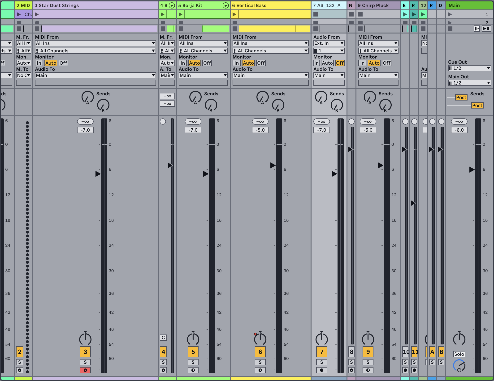
The Mixer section has several additional features that are not visible by default. The mixer is resizable, and dragging upwards on the top of the mixer will extend the height of the track meters, adding tick marks, a numeric volume field and resettable peak level indicators. Increasing a track’s width in this state will add a decibel scale alongside the meter’s tick marks.
These enhancements are tailored for use in traditional mixing settings, but are available anytime the Mixer section is displayed.
Because of the enormous headroom of Live’s 32-bit floating point audio engine, Live’s audio and MIDI tracks can be driven far “into the red“ without causing the signals to clip. The only time that signals over 0 dB will be problematic is when audio leaves Live and goes into the outside world. Examples include:
- When routing to or from physical inputs and outputs, like those of your sound card.
- Audio on the Main track (which is almost always connected to a physical output).
- When saving or exporting audio to a file.
Nevertheless, Live provides this optional visual feedback for signals that travel beyond 0 dB in any track.
18.2 Audio and MIDI Tracks
Audio and MIDI tracks in Live are for hosting and playing clips, as explained in the Live Concepts chapter.
You can add new audio and MIDI tracks to your Live Set by using the corresponding Create menu commands, or you can use the shortcuts CtrlT (Win) / CmdT (Mac) to create an audio track and CtrlShiftT (Win) / CmdShiftT (Mac) to create a MIDI track.
Tracks can also be created by double-clicking or pressing Enter on files in the browser to load them, or by dragging contents from the browser into the space to the right of Session View tracks or below Arrangement View tracks. Devices or files loaded into Live in this manner will create tracks of the appropriate type (e.g., a MIDI track will be created if a MIDI file or effect is dragged in).
Dragging one or multiple clips from an existing track into the space to the right of Session View tracks or below Arrangement View tracks creates a new track with those clips and the original track’s devices.
A track is represented by its track title bar.
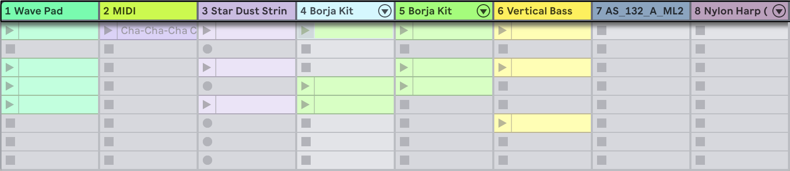
You can click on a track title bar to select the track and then execute an Edit menu command on the track to edit it. One such available command is Rename. One can quickly rename a series of tracks by executing this command, or the Rename shortcut CtrlR (Win) / CmdR (Mac), and then using the Tab key to move from title bar to title bar.
When a # symbol precedes a name, the track will get a number that updates automatically when the track is moved. Adding additional # symbols will prepend the track number with additional zeros. You can also enter your own info text for a track via the Edit Info Text command in the Edit menu or in the track’s context menu.
You can drag tracks by their title bars to rearrange them, or click and drag on their edges to change their width (in the Session View) or height (in the Arrangement View).
Multiple adjacent or nonadjacent tracks can be selected at once by Shift-clicking or Ctrl-clicking, respectively. If you drag a selection of nonadjacent tracks, they will be collapsed together when dropped. To move nonadjacent tracks without collapsing, use Ctrl + arrow keys instead of the mouse.
When multiple tracks are selected, adjusting one of their mixer controls will adjust the same control for the other tracks. If the tracks in the multi-selection have differing values for any particular knob or slider parameter (volume, for example), this difference will be maintained as you adjust the parameter.
If you drag a track’s title bar to a folder in the Places section of the browser it will be saved as a new Set. If a track contains audio clips, Live will manage the copying of the referenced samples into this new location based on the selection in the Collect Files on Export chooser. You can then type in a name for the newly created Set or confirm the one suggested by Live with Enter.
Tracks are deleted using the Edit menu’s Delete command.
18.3 Group Tracks
You can combine any number of individual audio or MIDI tracks into a special kind of summing container called a Group Track. To create a Group Track, select the tracks to include and execute the Edit menu’s Group Tracks command. You also use this command to nest an existing Group Track(s) within a new Group Track.
Group Tracks themselves cannot contain clips, but they are similar to audio tracks in that they have mixer controls and can host audio effects.
Group Tracks also provide a quick way to create submixes. When tracks are placed into a group, their Audio To routing choosers are automatically assigned to their Group Track unless they already had a custom routing, i.e. to a destination other than Main. You can also use a Group Track purely as a “folder“ track by rerouting the outputs of the contained tracks to some other destination.
The tracks in a group can be shown or hidden via the Unfold Group button in the title bar. This can help you to organize large Sets by hiding away tracks that you don’t need to see.
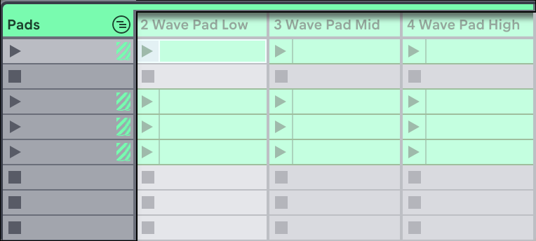
Once a Group Track has been created, tracks can be dragged into or out of the group. Deleting a Group Track deletes all of its contents, but a group can be reverted back into individual tracks by executing the Edit Menu’s Ungroup Tracks command.
Group Tracks in Arrangement View show an overview of the clips in the contained tracks.
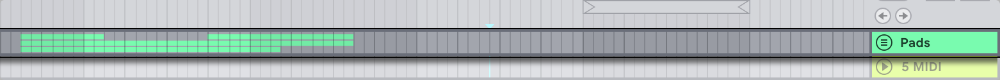
In Session View, slots in Group Tracks have launch and stop buttons whenever at least one clip is available in a given scene. Launching or stopping this button has the same effect as launching or stopping all contained clips. Likewise, selecting a Group Slot serves as a shortcut for selecting all of the contained clips.
To apply a Group Track’s color to all of its contained tracks and clips, you can use the Assign Track Color to Grouped Tracks and Clips command in the respective Group Track header’s context menu.
Note that when using the Assign Track Color to Grouped Tracks and Clips command in Session View, the color change will only affect Session clips. Likewise, using either command in Arrangement View will only change the color of Arrangement clips.
If a Group Track contains a soloed track or nested Group Track, its Solo button will appear half colored.
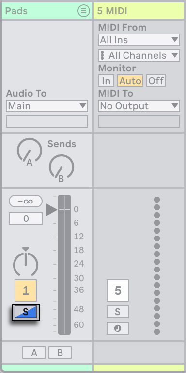
18.4 Return Tracks and the Main track
In addition to Group Tracks and tracks that play clips, a Live Set has a Main track and return tracks; these cannot play clips, but allow for more flexible signal processing and routing.
The return tracks and the Main track occupy the right-hand side of the Session mixer view and the bottom end of the Arrangement View.
Note that you can hide and show the return tracks using the Return Tracks entry in the Mixer Controls submenu within the View menu.
Like regular clip tracks, return tracks can host effects devices. However, whereas a clip track’s effect processes only the audio within that track, return tracks can process audio sent to them from numerous tracks.
For example, suppose you want to create rhythmic echoes with a delay effect. If you drag the effect into a clip track, only clips playing in this track will be echoed. Placing this effect in a return track lets it receive audio from any number of tracks and add echoes to them.
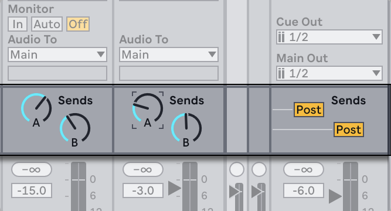
A clip or group track’s Send control determines how much of the track’s output feeds the associated return track’s input. What’s more, even the return track’s own output can be routed to its input, allowing you to create feedback. Because runaway feedback can boost the level dramatically and unexpectedly, the Send controls in Return tracks are disabled by default. To enable them, right-click on a Return track’s Send knob and select Enable Send or Enable All Sends.
Every return track has a Pre/Post toggle that determines if the signal a clip track sends to it is tapped before or after the mixer stage (i.e., the pan, volume and track-active controls). The “Pre“ setting allows you to create an auxiliary mix that is processed in the return track, independently of the main mix. As the return track can be routed to a separate output, this can be used to set up a separate monitor mix for an individual musician in a band.
The Main track is the default destination for the signals from all other tracks. Drag effects here to process the mixed signal before it goes to the Main output. Effects in the Main track usually provide mastering-related functions, such as compression and/or EQ.
You can create multiple return tracks using the Create menu’s Insert Return Track command, but by definition, there is only one Main track.
18.5 Using Live’s Crossfader
Live includes a crossfader that can create smooth transitions between clips playing on different tracks. Live’s crossfader works like a typical DJ-mixer crossfader, except that it allows crossfading not only two, but any number of tracks — including the returns.
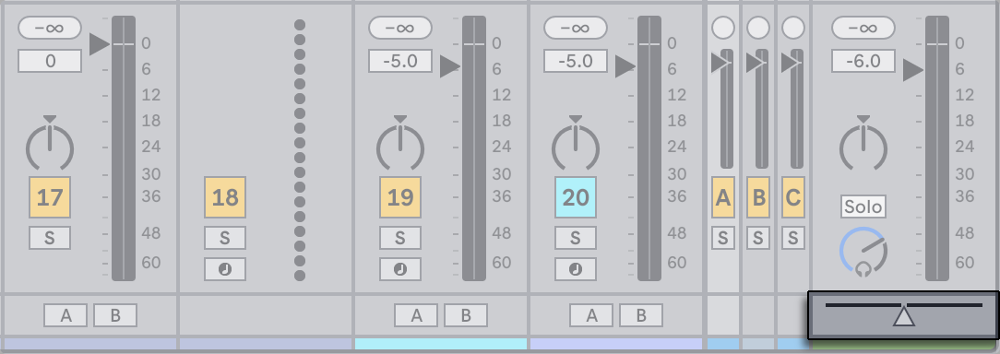
The crossfader can be accessed via the Mixer Controls submenu in the View menu or the menu options in the mixer view control at the bottom right of Live’s window. Seven different crossfade curves are available so that you can choose the one that fits your style the best. To change the curve, right-click on the crossfader, then select an entry from the context menu.
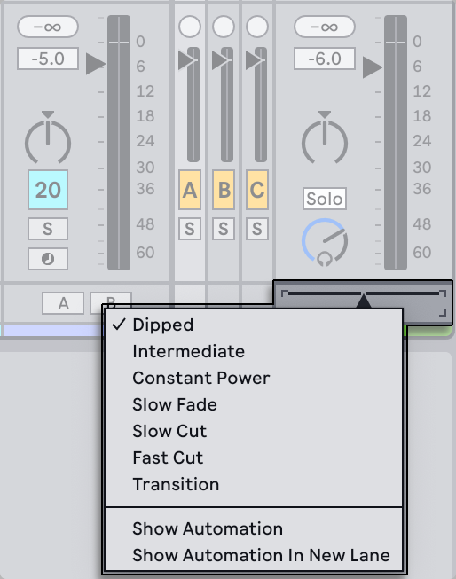
The chart below details the power level and response of each crossfader curve.
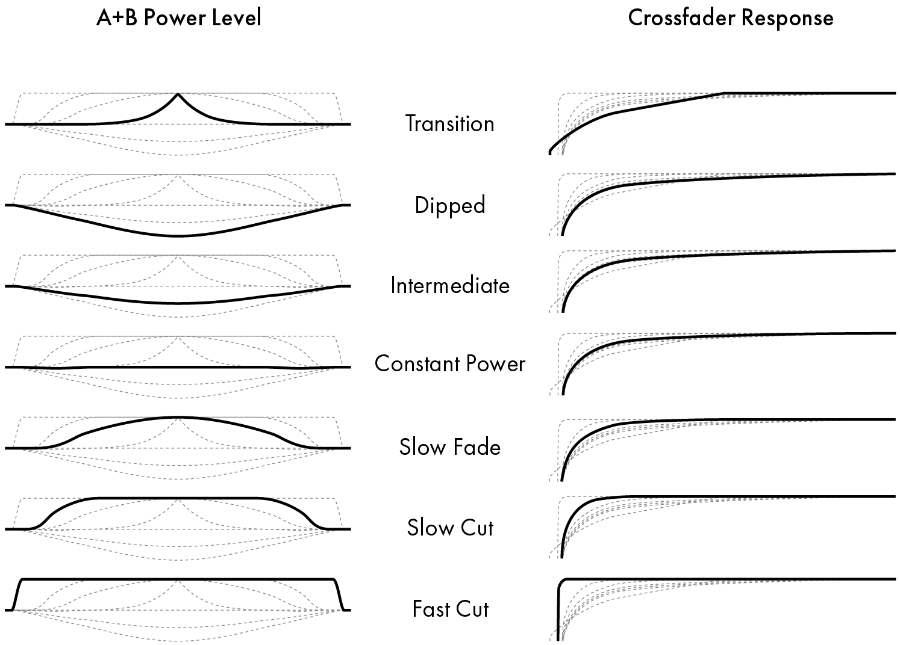
The crossfader can be mapped to any continuous MIDI controller (absolute or incremental). In addition to the crossfader’s central slider, its absolute left and right positions are separately available for MIDI or keyboard mapping. There are two special scenarios for remote control with respect to the crossfader:
- A key mapped to any one of the three assignable crossfader positions (left, center or right) will toggle the crossfader’s absolute left and right positions.
- Mapping to two of the three fields allows for a “snapping back“ behavior when one of the assigned keys is held down and the other is pressed and released.
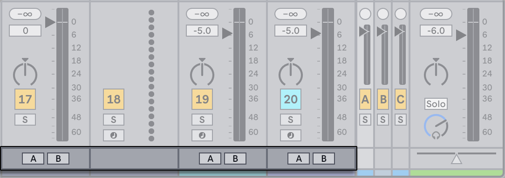
Each track has two Crossfade Assign buttons, A and B. The track can have three states with respect to the crossfader:
- If neither Assign button is on, the crossfader does not affect the track at all.
- If A is on, the track will be played unattenuated as long as the crossfader is in the left half of its value range. As the crossfader moves toward the right across the center position, the track fades out. At the crossfader’s rightmost position, the track is muted.
- Likewise, if B is on, the track’s volume will be affected only as the crossfader moves left across its center position.
It is important to understand that the Crossfade Assign buttons do not affect the signal routing; the crossfader merely influences the signal volume at each track’s gain stage. The track can be routed to an individual output bus regardless of its crossfade assignment. In studio parlance, you can think of the crossfader as an on-the-fly VCA group.
As with almost everything in Live, your crossfading maneuvers can be recorded into the Arrangement for later in-depth editing. To edit each track’s crossfade assignment, please choose “Mixer“ from the Envelope Device chooser and “X-Fade Assign“ from the Control chooser. The crossfader’s automation curve is accessible when “Mixer“ is chosen from the Main track’s Device chooser and “Crossfade“ is selected from its Control chooser.
18.6 Soloing and Cueing
By default, soloing a track simply mutes all other tracks (except in some cases where tracks are feeding other tracks). The signal from the soloed tracks is heard through their respective outputs, with the pan setting of each track preserved. Soloing a clip track leaves any return tracks audible, provided that the Solo in Place option is enabled in the Solo button’s context menu. Solo in Place can also be set as the default behavior by selecting the entry in the Options menu.
Soloing a return track mutes the main output of all other tracks, but still allows you to hear any signals that arrive at the return via track sends.
Live allows you to replace the standard soloing operation with a cueing operation that lets you preview tracks as though you were cueing a record on a DJ mixer. This allows choosing clips and adjusting effects without the audience hearing, before bringing tracks into the mix.
In order to set Live up for cueing, you must be using an audio interface with at least four dedicated outputs (or two dedicated stereo outputs). The respective settings are accessible in the Main track. Make sure you have the mixer section and In/Out controls visible.
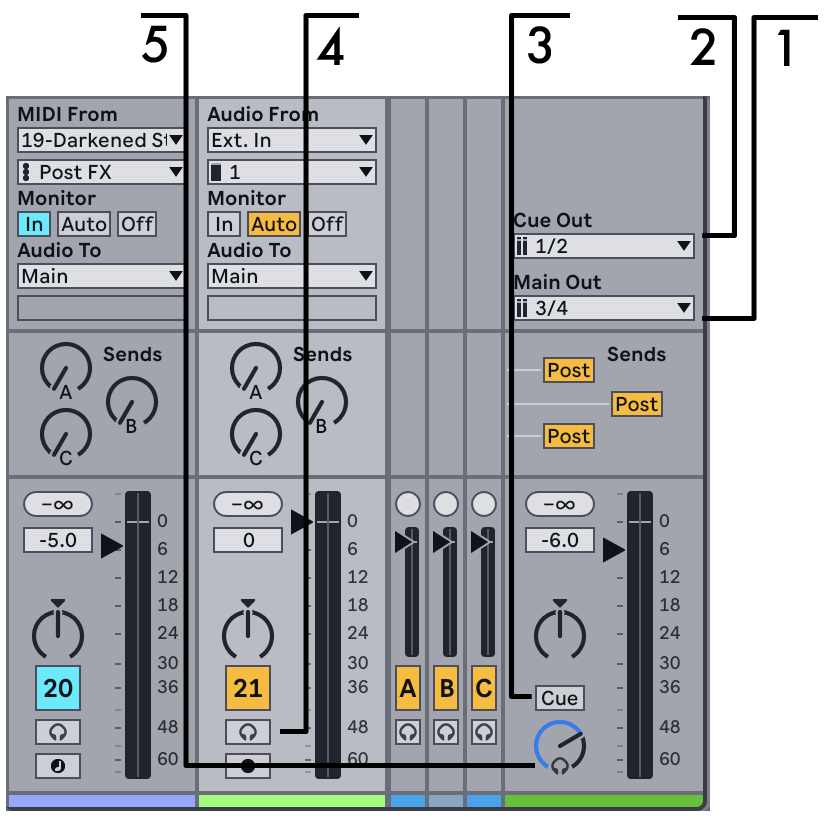
- The Main Out chooser selects the output on your interface to be used as the main output.
- The Cue Out chooser selects the output on your hardware interface to be used for cueing. This has to be set to an output other than that selected for Main. If the desired outputs don’t show up in these choosers, please check the Audio Settings.
- Activate cueing by setting the Solo/Cue Mode switch to “Cue.“
- The tracks’ Solo switches are now replaced by Cue switches with headphone icons. When a track’s Cue switch is pressed, that track’s output signal will be heard through the output selected in the Cue Out chooser. Note that the Track Activator switch on the same track still controls whether or not the track is heard at the Main output.
- The Cue Volume control adjusts the volume of the cueing output.
Note that when cueing is set up and activated, the output of audio files that you are previewing in the browser is also heard through the Cue Out.
18.7 Track Delays
A Track Delay control is available for every track in Live. The control allows delaying or pre-delaying the output of tracks in milliseconds in order to compensate for human, acoustic, hardware and other real-world delays.
You can access Track Delays using the Track Options entry in the Mixer Controls submenu within the View menu, or the menu options in the mixer view control at the bottom right of Live’s window.
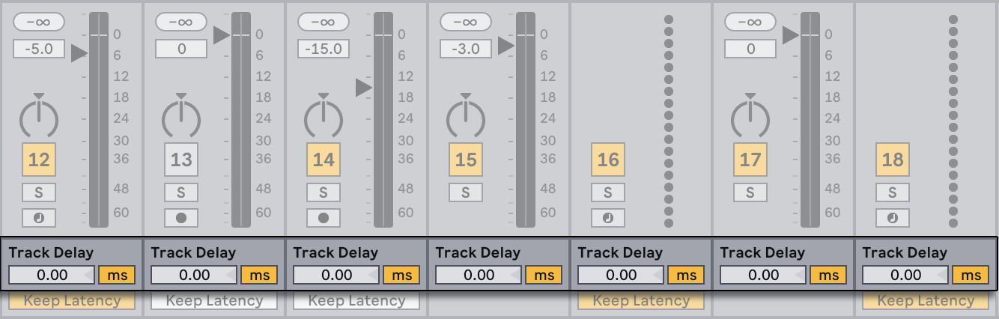
We do not recommend changing track delays on stage, as it could result in undesirable clicks or pops in the audio signal. Micro-offsets in Session View clips can be achieved using the Nudge Backward/Forward buttons in the Clip View, however track delays can be used in the Arrangement View for such offsets.
Note that delay compensation for plug-ins and Live devices is a separate feature, and is automatic by default. Unusually high Track Delay settings or reported latencies from plug-ins may cause noticeable sluggishness in the software. If you are having latency-related difficulties while recording and playing back instruments, you may want to try turning off device delay compensation, however this is not normally recommended. You may also find that adjusting the individual track delays is useful in these cases. Note that the Track Delay controls are unavailable when device delay compensation is deactivated.
18.8 Keep Monitoring Latency in Recording Track Toggles
When monitoring is set to “In” or “Auto,” the “Keep Monitoring Latency in Recording” option will be enabled by default.
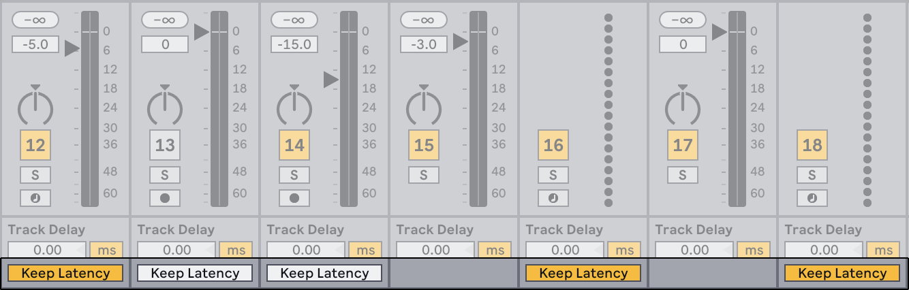
This adjusts the timing of the recording to match what is heard through Live’s monitoring. Generally speaking it is recommended to leave this option enabled when recording software instruments or effects, and to switch it off when recording acoustic instruments or relying on external monitoring.
You can use the toggles or right-click on the In or Auto track monitor buttons to manually switch “Keep Monitoring Latency in Recorded Audio” on or off.
18.9 Performance Impact Track Indicators
In the mixer section, it is possible to see each track’s impact on the CPU load using the Performance Impact indicators. You can show or hide the indicators using the Mixer Controls submenu in the View menu or the menu options in the mixer view control at the bottom right of Live’s window.

Each track has its own CPU meter with six rectangles that light up to indicate the relative impact of that track on the CPU level of the current Set. Freezing the track with the largest impact or removing devices from that track will usually reduce the CPU load.